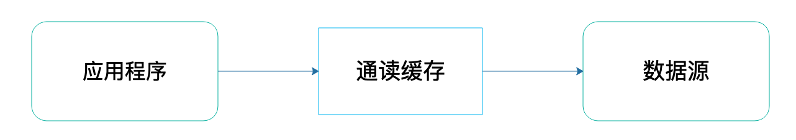
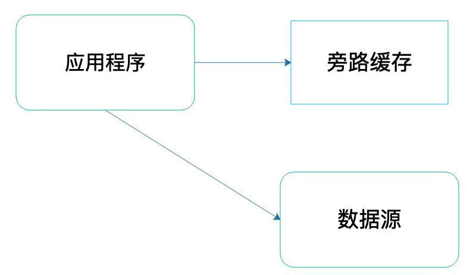
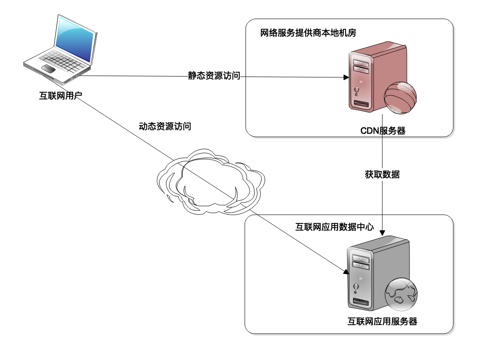
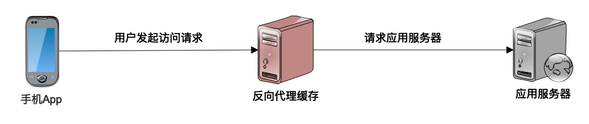
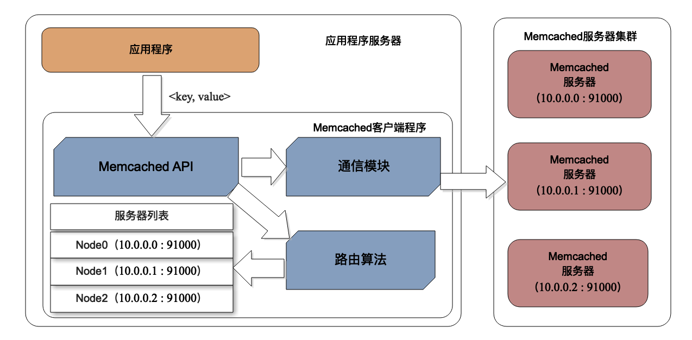

- 00 开篇词 掌握软件开发技术的第一性原理.md.html
- 01 程序运行原理：程序是如何运行又是如何崩溃的？.md.html
- 02 数据结构原理：Hash表的时间复杂度为什么是O(1)？.md.html
- 03 Java虚拟机原理：JVM为什么被称为机器（machine）？.md.html
- 04 网络编程原理：一个字符的互联网之旅.md.html
- 05 文件系统原理：如何用1分钟遍历一个100TB的文件？.md.html
- 06 数据库原理：为什么PrepareStatement性能更好更安全？.md.html
- 07 答疑 Java Web程序的运行时环境到底是怎样的？.md.html
- 07 编程语言原理：面向对象编程是编程的终极形态吗？.md.html
- 08 软件设计的方法论：软件为什么要建模？.md.html
- 09 软件设计实践：如何使用UML完成一个设计文档？.md.html
- 10 软件设计的目的：糟糕的程序员比优秀的程序员差在哪里？.md.html
- 11 软件设计的开闭原则：如何不修改代码却能实现需求变更？.md.html
- 12 软件设计的依赖倒置原则：如何不依赖代码却可以复用它的功能？.md.html
- 13 软件设计的里氏替换原则：正方形可以继承长方形吗？.md.html
- 14 软件设计的单一职责原则：为什么说一个类文件打开最好不要超过一屏？.md.html
- 15 软件设计的接口隔离原则：如何对类的调用者隐藏类的公有方法？.md.html
- 16 设计模式基础：不会灵活应用设计模式，你就没有掌握面向对象编程.md.html
- 17 设计模式应用：编程框架中的设计模式.md.html
- 18 反应式编程框架设计：如何使程序调用不阻塞等待，立即响应？.md.html
- 19 组件设计原则：组件的边界在哪里？.md.html
- 20 答疑 对于设计模式而言，场景到底有多重要？.md.html
- 20 领域驱动设计：35岁的程序员应该写什么样的代码？.md.html
- 21 分布式架构：如何应对高并发的用户请求.md.html
- 22 缓存架构：如何减少不必要的计算？.md.html
- 23 异步架构：如何避免互相依赖的系统间耦合？.md.html
- 24 负载均衡架构：如何用10行代码实现一个负载均衡服务？.md.html
- 25 数据存储架构：如何改善系统的数据存储能力？.md.html
- 26 搜索引擎架构：如何瞬间完成海量数据检索？.md.html
- 27 微服务架构：微服务究竟是灵丹还是毒药？.md.html
- 28 高性能架构：除了代码，你还可以在哪些地方优化性能？.md.html
- 29 高可用架构：我们为什么感觉不到淘宝应用升级时的停机？.md.html
- 30 安全性架构：为什么说用户密码泄漏是程序员的锅？.md.html
- 31 大数据架构：大数据技术架构的思想和原理是什么？.md.html
- 32 AI与物联网架构：从智能引擎到物联网平台.md.html
- 33 区块链技术架构：区块链到底能做什么？.md.html
- 33 答疑 互联网需要解决的技术问题是什么？.md.html
- 34 技术修炼之道：同样工作十几年，为什么有的人成为大厂架构师，有的人失业？.md.html
- 35 技术进阶之道：你和这个星球最顶级的程序员差几个等级？.md.html
- 36 技术落地之道：你真的知道自己要解决的问题是什么吗？.md.html
- 37 技术沟通之道：如何解决问题？.md.html
- 38 技术管理之道：你真的要转管理吗？.md.html
- 38 答疑 工作中的交往和沟通，都有哪些小技巧呢？.md.html
- 加餐 软件设计文档示例模板.md.html
- 结束语 期待未来的你，成为优秀的软件架构师.md.html
- 捐赠
22 缓存架构：如何减少不必要的计算？
上一篇我们讲到，互联网应用的主要挑战就是在高并发情况下，大量的用户请求到达应用系统服务器，造成了巨大的计算压力。互联网应用的核心解决思路就是采用分布式架构，提供更多的服务器，从而提供更多的计算资源，以应对高并发带来的计算压力及资源消耗。
那么有没有办法减少到达服务器的并发请求压力呢？或者请求到达服务器后，有没有办法减少不必要的计算，降低服务器的计算资源消耗，尽快返回计算结果给用户呢？
有，解决的核心就是缓存。
所谓缓存，就是将需要多次读取的数据暂存起来，这样在后面，应用程序需要多次读取的时候，就不必从数据源重复加载数据了，这样就可以降低数据源的计算负载压力，提高数据响应速度。
一般说来，缓存可以分成两种，通读缓存和旁路缓存。
通读（read-through）缓存，应用程序访问通读缓存获取数据的时候，如果通读缓存有应用程序需要的数据，那么就返回这个数据；如果没有，那么通读缓存就自己负责访问数据源，从数据源获取数据返回给应用程序，并将这个数据缓存在自己的缓存中。这样，下次应用程序需要数据的时候，就可以通过通读缓存直接获得数据了。
通读缓存在架构中的位置与作用如下图：

旁路（cache-aside）缓存，应用程序访问旁路缓存获取数据的时候，如果旁路缓存中有应用程序需要的数据，那么就返回这个数据；如果没有，就返回空（null）。应用程序需要自己从数据源读取数据，然后将这个数据写入到旁路缓存中。这样，下次应用程序需要数据的时候，就可以通过旁路缓存直接获得数据了。
旁路缓存在架构中位置与作用如下图：

通读缓存
互联网应用中主要使用的通读缓存是CDN和反向代理缓存。
CDN（Content Delivery Network）即内容分发网络。我们上网的时候，App或者浏览器想要连接到互联网应用的服务器，需要网络服务商，比如移动、电信这样的服务商为我们提供网络服务，建立网络连接才可以上网。
而这些服务商需要在全国范围内部署骨干网络、交换机机房才能完成网络连接服务，这些交换机机房可能会离用户非常近，那么互联网应用能不能在这些交换机机房中部署缓存缓存服务器呢？这样，用户就可以近距离获得自己需要的数据，既提高了响应速度，又节约了网络带宽和服务器资源。
当然可以。这个部署在网络服务商机房中的缓存就是CDN，因为距离用户非常近，又被称作网络连接的第一跳。目前很多互联网应用大约80%以上的网络流量都是通过CDN返回的。

CDN只能缓存静态数据内容，比如图片、CSS、JS、HTML等内容。而动态的内容，比如订单查询、商品搜索结果等必须要应用服务器进行计算处理后才能获得。因此，互联网应用的静态内容和动态内容需要进行分离，静态内容和动态内容部署在不同的服务器集群上，使用不同的二级域名，即所谓的动静分离，一方面便于运维管理，另一方面也便于CDN进行缓存，使CDN只缓存静态内容。
反向代理缓存也是一种通读缓存。我们上网的时候，有时候需要通过代理上网，这个代理是代理我们的客户端上网设备。而反向代理则代理服务器，是应用程序服务器的门户，所有的网络请求都需要通过反向代理才能到达应用程序服务器。既然所有的请求都需要通过反向代理才能到达应用服务器，那么在这里加一个缓存，尽快将数据返回给用户，而不是发送给应用服务器，这就是反向代理缓存。

用户请求到达反向代理缓存服务器，反向代理检查本地是否有需要的数据，如果有就直接返回，如果没有，就请求应用服务器，得到需要的数据后缓存在本地，然后返回给用户。
旁路缓存
CDN和反向代理缓存通常会作为系统架构的一部分，很多时候对应用程序是透明的。而应用程序在代码中主要使用的是对象缓存，对象缓存是一种旁路缓存。
不管是通读缓存还是旁路缓存，缓存通常都是以
对于
程序中使用的对象缓存，可以分成两种。一种是本地缓存，缓存和应用程序在同一个进程中启动，使用程序的堆空间存放缓存数据。本地缓存的响应速度快，但是缓存可以使用的内存空间相对比较小，但是对于大型互联网应用所需要缓存的数据通以T计，这时候就要使用远程的分布式缓存了。
分布式缓存是指将一组服务器构成一个缓存集群，共同对外提供缓存服务，那么应用程序在每次读写缓存的时候，如何知道要访问缓存集群中的哪台服务器呢？我们以Memcached为例，看看分布式缓存的架构：

Memcached将多台服务器构成一个缓存集群，缓存数据存储在每台服务器的内存中。事实上，使用缓存的应用程序服务器通常也是以集群方式部署的，每个程序需要依赖一个Memcached的客户端SDK，通过SDK的API访问Memcached的服务器。
应用程序调用API，API调用SDK的路由算法，路由算法根据缓存的key值，计算这个key应该访问哪台Memcached服务器，计算得到服务器的IP地址和端口号后，API再调用SDK的通信模块，将
那么，路由算法又是如何计算得到Memcached的服务器IP端口呢？比较简单的一种方法，和Hash算法一样，利用key的Hash值对服务器列表长度取模，根据余数就可以确定服务器列表的下标，进而得到服务器的IP和端口。
缓存注意事项
使用缓存可以减少不必要的计算，能够带来三个方面的好处：
- 缓存的数据通常存储在内存中，距离使用数据的应用也更近一点，因此相比从硬盘上获取，或者从远程网络上获取，它获取数据的速度更快一点，响应时间更快，性能表现更好。
- 缓存的数据通常是计算结果数据，比如对象缓存中，通常存放经过计算加工的结果对象，如果缓存不命中，那么就需要从数据库中获取原始数据，然后进行计算加工才能得到结果对象，因此使用缓存可以减少CPU的计算消耗，节省计算资源，同样也加快了处理的速度。
- 通过对象缓存获取数据，可以降低数据库的负载压力；通过CDN、反向代理等通读缓存获取数据，可以降低服务器的负载压力。这些被释放出来的计算资源，可以提供给其他更有需要的计算场景，比如写数据的场景，间接提高整个系统的处理能力。
但是缓存也不是万能的，如果不恰当地使用缓存，也可能会带来问题。
首先就是数据脏读的问题，缓存的数据来自数据源，如果数据源中的数据被修改了，那么缓存中的数据就变成脏数据了。
主要解决办法有两个，一个是过期失效，每次写入缓存中的数据都标记其失效时间，在读取缓存的时候，检查数据是否已经过期失效，如果失效，就重新从数据源获取数据。缓存失效依然可能会在未失效时间内读到脏数据，但是一般的应用都可以容忍较短时间的数据不一致，比如淘宝卖家更新了商品信息，那么几分钟数据没有更新到缓存，买家看到的还是旧数据，这种情况通常是可以接受的，这时候，就可以设置缓存失效时间为几分钟。
另一个办法就是失效通知，应用程序更新数据源的数据，同时发送通知，将该数据从缓存中清除。失效通知看起来数据更新更加及时，但是实践中，更多使用的还是过期失效。
此外，并不是所有数据使用缓存都有意义。在互联网应用中，大多数数据访问都是有热点的，比如热门微博会被更多阅读，热门商品会被更多浏览。那么将这些热门的数据保存在缓存中是有意义的，因为缓存通常使用内存，存储空间比较有限，只能存储有限的数据，热门数据存储在缓存中，可以被更多次地读取，缓存效率也比较高。
相反，如果缓存的数据没有热点，写入缓存的数据很难被重复读取，那么使用缓存就不是很有必要了。
小结
缓存是优化软件性能的杀手锏，任何需要查询数据、请求数据的场合都可以考虑使用缓存。缓存几乎是无处不在的，程序代码中可以使用缓存，网络架构中可以使用缓存，CPU、操作系统、虚拟机也大量使用缓存，事实上，缓存最早就是在CPU中使用的。对于一个典型的互联网应用而言，使用缓存可以解决绝大部分的性能问题，如果需要优化软件性能，那么可以优先考虑哪里可以使用缓存改善性能。
除了本篇提到的系统架构缓存外，客户端也可以使用缓存，在App或者浏览器中缓存数据，甚至都不需要消耗网络带宽资源，也不会消耗CDN、反向代理的内存资源，更不会消耗服务器的计算资源。
思考题
我们从Memcached路由算法讲到余数Hash算法，但是，这种算法在Memcached服务器集群扩容，也就是增加服务器的时候，会遇到较大的问题，问题是什么呢？应该如何解决？
欢迎你在评论区写下你的思考，也欢迎把这篇文章分享给你的朋友或者同事，一起交流进步一下。
© 2019 - 2023 Liangliang Lee. Powered by gin and hexo-theme-book.